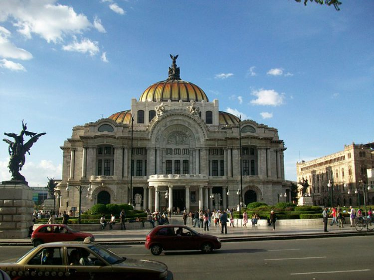

МЫ ДУМАЕМ ЧТО ЭТО СТРАНА ОЧЕНЬ ПОДХОДИТЬ ДЛЯ ПУТЕШЕСТВИЕ И НАДЕЕМСЯ ЧТО ВАМ ПОНРАВИТСЯ НАШ ВЫБОР
В этой стране прослеживается смесь испанской, индейской и карибской культуры. Это значит, путешествие сюда запомнится на всю жизнь, а вы со своей стороны постарайтесь получить максимальное удовольствие и пользу. Переходим к главному, какие главные достопримечательности стоит увидеть?
Кафедральный собор Мехико

Находится в самом сердце страны, храм настолько величествен, что мимо него не может пройти никто. Высокая базилика видна даже издалека, причем с разных сторон. Отдельно хотелось бы сказать о звоне колоколов, его не спутаешь ни с каким другим звуком. В свое время собор был построен в честь Пресвятой Богородицы, а занял он место ничем не примечательной обители, которая не вмещала всех верующих. Туристы, которые уже бывали в Мехико, отмечают, что увидеть храм снаружи недостаточно, чтобы в полной мере оценить его величие. Заглянув во внутренние залы, что может сделать любой желающий, вы точно останетесь под большим впечатлением.
Чичен-Ица
Эта достопримечательность Мексики представляет собой грандиозный центр майя-тольтекской цивилизации в виде одного из крупнейших древних городов. Он уникален тем, что демонстрирует то, как древние народы представляли вселенную, окружающий мир. Сам населенный пункт числится в списке Всемирного наследия, а пирамида Кукулькан, которая находится на его территории, относится к чудесам света. Еще там сохранились разнообразные предметы быта, статуи богов, священный колодец глубиной 50 м, в некоторых местах встречаются даже наскальные рисунки.
Чапультепекский дворец
Он заслуженно считается самым знаменитым во всей Северной Америке, а известен он тем, что представляет собой место бывшего пребывания губернаторов, президентов страны, императоров. Инициатором его основания стал бывший король Бернард де Гальвеса. В процессе строительства стало понятно, что средств у государства не хватает, было принято решение продать замок с молотка. Результата удалось добиться в 1806 г., покупателем стала администрация Мехико. Когда здание было достроено, в нем расположилась военная академия. В наше время там проводятся экскурсии, они организовываются каждый день, по отзывам, не утомительны.
Национальный музей антропологии
Считается самым известным не только на территории столицы, но и всего государства. Описываемая достопримечательность Мексики еще считается одной из самых посещаемых, потому что посмотреть на нее каждый год приезжает как минимум 2 миллиона туристов. Сам музей включает в себя 2 основных отдела. Первый этаж вмещает в себе антропологическую секцию, второй этнографическую. На каждом этаже имеется по 11 выставочных залов. Многие экскурсии в Мексике включают в себя посещение этого музея, потому что он знакомит гостей страны с бытом древних народов, которые когда-то существовали на ее территории.
Медный каньон
Речь идет о мексиканском национальном парке, который часто сравнивают с Гранд-Каньоном, что в Соединенных Штатах. Попасть туда действительно стоит, потому что он поражает глубокими опасными ущельями посреди жаркой пустыни, живописными реками. Интересно знать, что свое название каньон получил по причине того, что его склоны поросли зеленоватым мхом, который в свое время испанцы приняли за медь. В описании значится, на вершинах и дне узкой долины температура воздуха разнится по причине больших перепадов высот. В данной местности обитает треть всех млекопитающих Мексики, а также множество птиц, растений здесь тоже хватает.
Акапулько
Так называется один из портовых городов страны, который прославился далеко за ее пределами за счет наличия живописных заливов, обилия старинных достопримечательностей. Поездка туда обещает быть интересной, потому что населенный пункт богат местами для развлечений, типа клубов, баров. Находится Акапулько на юго-востоке страны, а именно в бухте с таким же названием, раскинувшейся вдоль Тихоокеанского побережья. Что посмотреть в Мексике, а именно в Акапулько? Внимания заслуживает замок «Капелла мира», исторический музей, парк Папагайо, Кафедральный собор. Если вы путешествуете с детьми, тогда вам стоит посетить аквапарк «Акапулько Мэджико».
Пирамиды Теотиуакан
Достопримечательность Мексики находится в самом древнем городе, причем во всем западном полушарии планеты Земля. Его остатки находятся примерно в 40-60 км от столицы государства, а название дословно переводится как «место, где люди становятся богами». Согласно предположениям ученых, основан город был индейцами, что происходило в период 100-500 годов н.э. Рейтинг этого места просто зашкаливает, потому что оно представляет огромный археологический комплекс, включающий в себя такие известные постройки, как Пирамида Солнца, Луны. В самом городе преобладает умеренный климат.
Парк Шкарет

В переводе название парковой зоны означает «маленькая бухта», что как нельзя точно описывает место. Находится оно на карибском побережье страны. Официальное описание гласит, когда-то одним архитектором была приобретена земля, на которой он хотел построить дом для своей семьи. В процессе ее подготовки были обнаружены провалы, было установлено, что образованы они по причине обрушивания сводов известняковых пещер. Также было отмечено наличие подземных рек. Немного подумав, архитектор решил со своими друзьями не строить дом, а открыть парк. Сегодня там красуются памятники древней культуры, великолепные пляжи. Особенностью является тропическая природа, животные, обитающие практически на воле. Имейте в виду, что часто на территории парка организовываются яркие вечерние представления при участии профессиональных артистов, посвящены они исторической тематике.
Сеноты на полуострове Юкатан
Эта достопримечательность Мексики представляет собой удивительные образования природного происхождения. Секрет в том, что весь полуостров пронизан подземными реками, озерами, причем изнутри. Сенотами принято называть естественно образованные колодцы и тоннели, в которых содержится прозрачная вода. Получаются такие участки, когда проваливаются известняковые почвы. Считается, что, если нырнуть в сенот, выплыть можно в открытом море.
Остров Мескальтитан
Название этой достопримечательности Мексики переводится как «изобилующий мескалем». Согласно последним данным, населяет остров суши немного больше 800 человек. В предании говорится, что в свое время ацтеки покинули его с целью найти место для жизни лучше. Сам остров находится на болотистой местности, а его диаметр не превышает даже 400 м. Делая обзор, хотелось бы отметить, что в период с августа по сентябрь, на который приходится сезон дождей, населенный пункт буквально превращается в Венецию. По улицам, заполненным водой, передвигаться можно только на лодках. Положительной особенностью небольшого городка является полное отсутствие преступности.
Дворец изящных искусств

Такой имеется во многих странах, не исключением является Мексика. Рекомендации у этого места положительные, не удивительно, ведь это один из главных символов столицы. Внутреннее пространство в основном занимают концертные залы оперного театра, а это значит, во дворце можно насладиться оперными и балетными спектаклями в исполнении местных артистов. Фото получатся великолепные, не сомневайтесь, потому что внутреннее убранство величественного здания просто поражает.
Паленке
Не знаете, что посмотреть в Мексике за 1 день? Вашему вниманию предлагаются крупнейшие руины одного из самых древних городов, находятся они на северо-востоке штата Чьяпас. Это сотни строений, размещенных на общей площади 15 км². Максимально подробно изучить и восстановить на сегодня удалось только часть. Еще есть и современный Паленке, он находится в нескольких км к востоку. История и культура этого места очень интересны, гиды в Мексике об этом знают много, стоит воспользоваться их услугами.
Сан-Франсиско-де-Кампече

Город является столицей штата Кампече, а также административным центром одноименного муниципалитета. Раньше это было обычное поселение майя, но после его захвата конкистадорами ему присвоили статус важного центра в транспортной отрасли. Благодаря тому, что в городе развивалась торговля, он быстро разбогател, что позволило построить более чем тысячу зданий великолепного дизайна в пастельных оттенках, стиль был выбран барокко. Их удалось сохранить до наших дней. Как видите, с тем, куда сходить в Мексике, проблем нет, мест интересных и красивых достаточно.
Музей подводных скульптур
Эта достопримечательность Мексики точно понравится дайверам. Ее особенность заключается в том, что многочисленные скульптуры установлены на дне Карибского моря. Для посещения музея обязательно нужно надевать акваланг, без специального снаряжения насладиться удастся лишь малой частью прекрасного творения искусства. На сегодняшний день под водой, а именно на глубине 8-10 м собрано 403 объемных художественных произведений. Создается ощущение, что цивилизация внезапно ушла на дно. Это одно из лучших мест, что стоит посетить в Мексике.